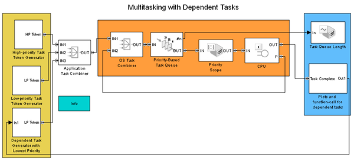

Multitasking with Dependent Tasks
Contents
Description
This model demonstrates how to model and prioritize the time-critical and non-time-critical parts of a process using dependent tasks.
Task tokens with two priority levels are generated by the two token generators on the left side of the model. The tokens are ordered in ascending priority in the Priority-Based Task Queue just before the CPU. The tokens are then passed to the CPU for task execution.
A task dependent on the completion of the high-priority task is modeled using the combination of the Entity Departure Event to Function-Call Event block and the Event-Based Entity Generator block. This allows the time-critical part of a process to be performed by a high-priority task. The remaining non-time-critical part is performed by a low-priority task, which is scheduled as a dependent task. The dependent task tokens are processed through the same task queue as the independent tasks.
Results and Displays
The simulation results can be seen on the following scopes:
- Priority value of the task being executed in the CPU. This plot indicates when a high-priority task (priority 1) preempts a low-priority task (priority 2) and when a low-priority task preempts a dependent task (priority 3).
- Length of the Priority-Based Task Queue. The queue length increases at times when the high-priority task is completed because the completion causes generation of a new dependent task.
- Number of low-priority tasks completed.
- Number of high-priority tasks completed.
- Number of dependent tasks completed. This equals the number of high-priority tasks completed because the dependent task tokens are generated upon the completion of a high-priority task.